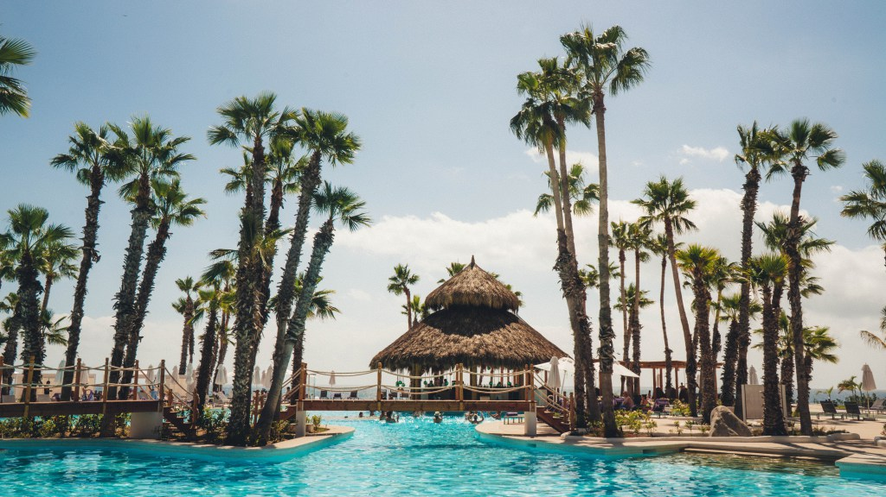
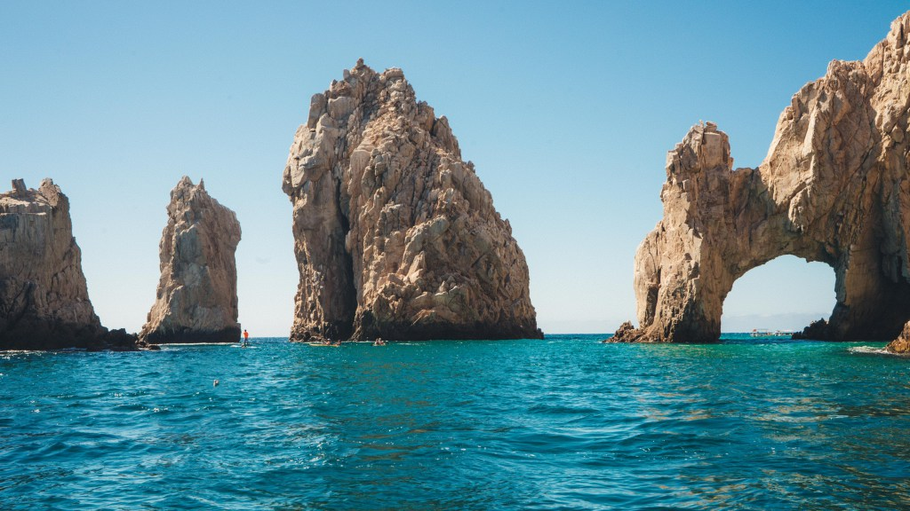
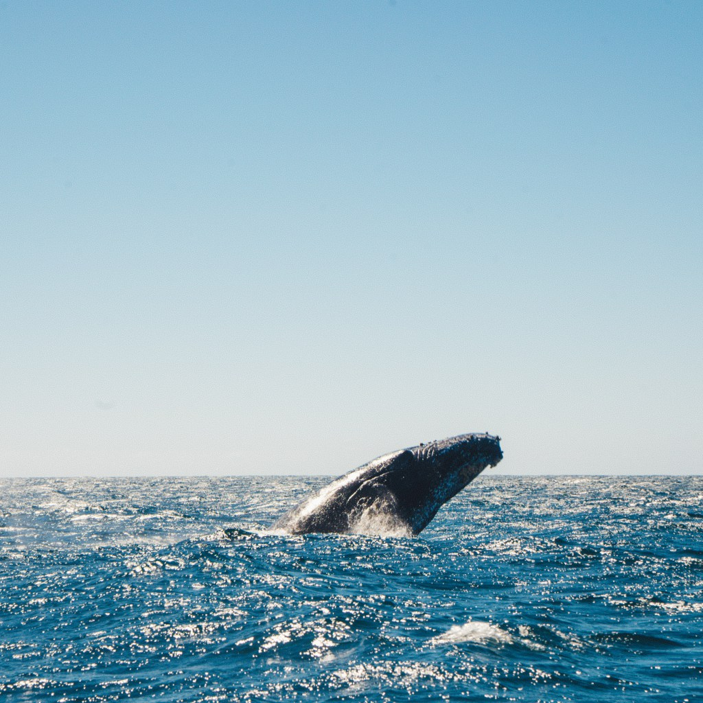

Los Cabos sits on the southern tip of Mexico’s Baja California Peninsula, which means it’s part of the west coast and the Pacific Ocean. One of the benefits of staying on the west coast of Mexico is that unlike the east coast, you can go whale watching! When it’s winter in North America the whales migrate down the coast to Mexico to the warmer waters to feed, breed and chill. So Dec-April is the best time to see them, which means February when I went, was prime whale time.
In Los Cabos I was staying at the newly renovated Paradisus Los Cabos Resort . Being the adventurer I am, whale watching was going to be a 1/2 day excursion I wasn’t going to miss out on! Organized through the resort, we arrived at our 9:30am shuttle to take us to the main marina in Cabos San Lucas, about a 20-30 minute drive from the resort. There we grouped up onto our boats, got on out life jackets and headed out onto the water!
In the first bits of the harbour we cruised pass kayakers, stand-up paddle-boarders and scuba divers, zigging around the El Arco de Cabos San Lucas, aka the Arches of Cabos San Lucas! Then it was out onto the open ocean where the whale hunt was on!! (not literal hunt, but whale spotting) Tip: Bundle up, aka bring a jacket because when you get onto the water, it can get windy! Whale watching is intense! It’s not like you can call up a whale and ask it to nicely breach close and long enough for you to snap the photos you want. It’s more like a cat and mouse game played with all the other boats on the water via radio, all looking for the whales. Then when a boat finally does spot one that’s hopefully on the surface for long enough, it’s a mad rush to get over to where the whale is. Being on open ocean, this can be quite far. When you do eventually get there it then becomes the finger crossing game. Please don’t dive under whale! As I have my camera wrapped in a plastic bag, finger glue to the rapid fire shutter, hopefully pointing in the correct location of where I assume the whale will pop up.
But all of that is worth it when you choose correctly and get to see these giant Humpback Whales and Grey Whales breach right beside you, not once but 3 times. The rush of adrenaline you get and the sheer excitement of capturing that photo is still only part of the fun. The real deal is seeing the whales in person, these magnificent creatures live in the wild. Looking on with my own eyes and of course cameras. After the whales dove down from our location it was back to the beach at the hotel, to sunbathe and reminisce on what a spectacular day I had on the west coast, in Cabo.